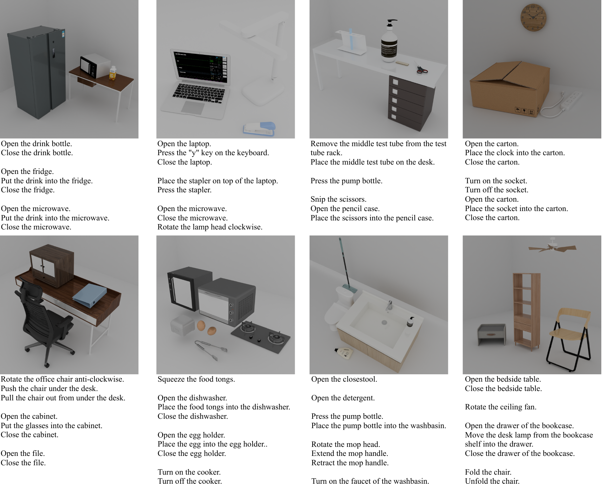

Monocular Real-to-Sim Scene Programming
Programming Interactive Scenes from Monocular Images for Embodied Simulation
NeoWorld-Pro transforms a single RGB image into executable, simulation-ready interactive scenes with programmable geometry, articulation, physical properties, and scene layout.
Shanghai Jiao Tong University
Interactive Scene
Select an input image to explore its interactive simulated scene.
Simulated Interactive Scene
Choose an input image to switch the simulation.Image-to-policy demonstration
Programming simulation-ready scenes for embodied manipulation.
Articulated Asset
Inspect generated assets and actuate their articulated parts in the browser.
USD Preview
Loading demo
Preparing the interactive viewer.
Dataset and Benchmark
A multi-object simulation benchmark for physically executable scenes.
NeoWorld-Pro is evaluated on PartNet-Mobility and a newly constructed synthetic scene benchmark designed to stress-test monocular reconstruction in physically realistic multi-object environments. The benchmark tasks cover placement, assembly, articulation, and interaction with task-relevant affordances.
Across 84 downstream manipulation tasks, NeoWorld-Pro achieves a 92.85% task success rate.

Citation
BibTeX
@misc{he2026NeoWorld-Pro,
title = {NeoWorld-Pro: Programming Interactive Scenes from Monocular Images for Embodied Simulation},
author = {He, Yumeng and Song, Yichen and Yang, Xiaotian and Zhang, Weijia and Zhou, Zanwei and Gong, Junru and Yang, Xiaokang and Wang, Yunbo},
year = {2026},
note = {Project page}
}